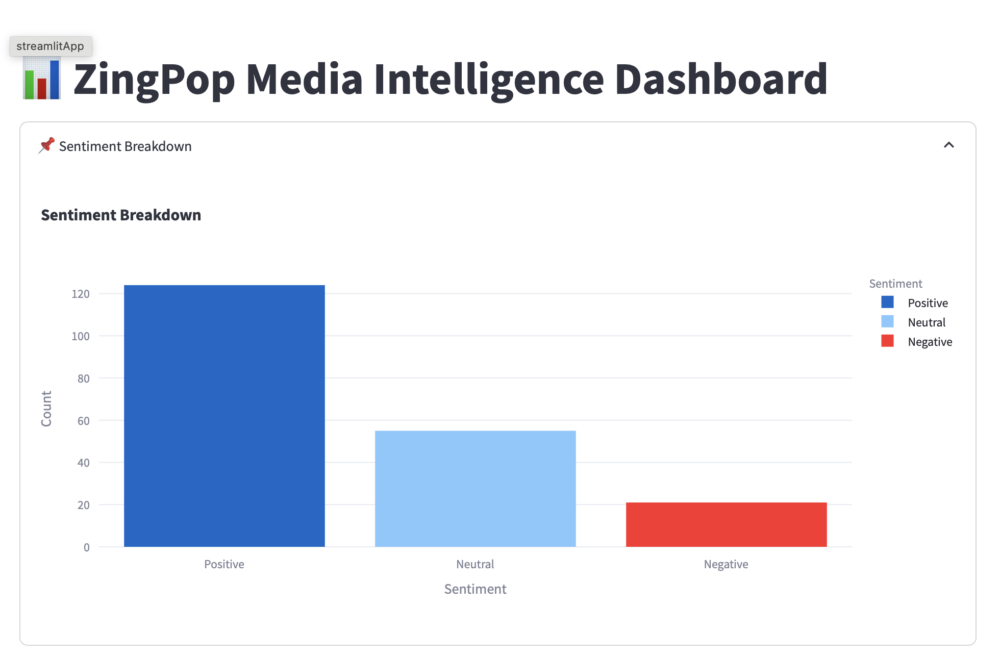
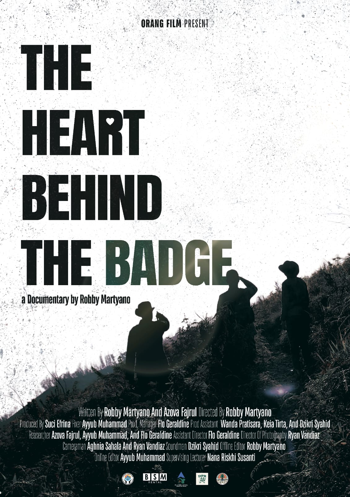

Proyek Unggulan


Ui Sports League
Event Olahraga Antar Universitas.
Tools: Figma,Adobe Ilustrator,Adobe Photoshop
Dampak: Meningkatkan Kembali Semangat Olahraga.
Instagram

Film The Heart Behind The Badge
Penjaga hutan mendedikasikan hidup mereka untuk menjaga alam liar dari ancaman lingkungan
Tools: Premiere Pro, DSLR
Dampak: Mengenal Tentang Polisi Hutan.
Lihat Konten
Podcast Cinta Satu Malam
Serial audio storytelling berbasis pengalaman cinta Gen Z. Diproduksi mandiri.
Tools: Audacity, Spotify for Podcasters
Dampak: Didengar lebih dari 1.000 kali di episode perdana.
Dengarkan Sekarang